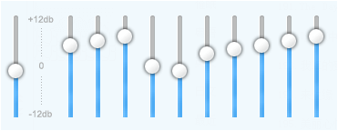
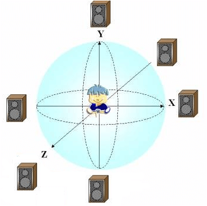
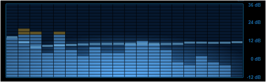

1. 它能做什么？
1.用作游戏的音效，可以方便地混音，同时地混着播放两个或以上音轨
2.使用内置的均衡器（BiquadFilter），可方便地定制音乐效果

3.使用内置的声源模型（Panner），创造身临其境的3D音效

4.使用内置的音频分析器（Analyser），绘制超动感的可视化效果

5.使用内置的振荡器（Oscillator），无须加载音频文件直接生成声音,网页版电子琴不成问题！还能自己做DJ！

6.使用内置的媒体流（MediaStream），直接从麦克风录制音频并即时处理,网页版KTV也不成问题！（目前移动端似乎暂未支持）

浏览器兼容性
最新的浏览器支持情况可参阅：http://caniuse.com/#feat=audio-api
对录音功能（MediaStream）的支持情况可参阅：http://caniuse.com/#feat=mediarecorder
截至2017年3月15日，浏览器兼容情况（不包括录音功能）是：
PC版：
- Chrome 34+
- Firefox 25+
- Safari 6.0+
- Opera 22+
- Edge 完全兼容
- IE （11及以下版本均不兼容）
移动版：
- iOS 6.0+ （须加 "-webkit-" 前缀）
- Android 5.0+ （4.4.4 及以下版本不兼容）
- Chrome for Android 34+
- QQ浏览器 for Android 1.2+
- UC浏览器 for Android （暂不兼容）
可见目前基本都比较完整地兼容大部分浏览器了。
接下来...
下一节《开始发出声音》，将立即播放一个mp3文件，并简要说明使用 Web Audio API 播放音频的步骤。